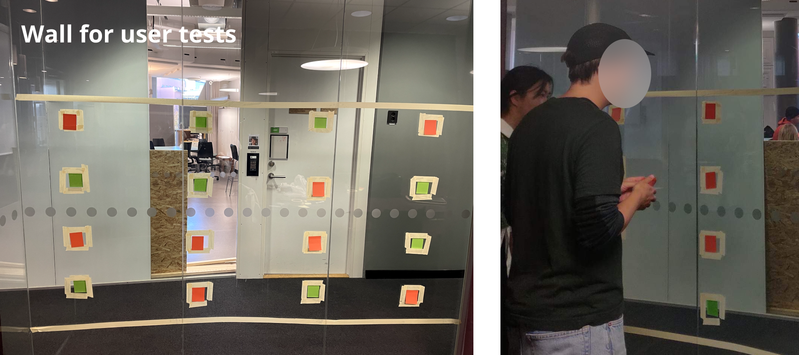
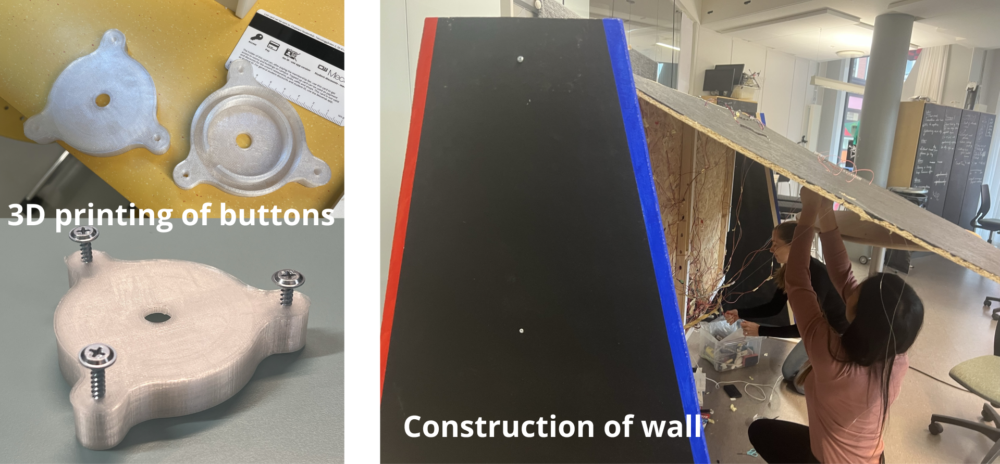
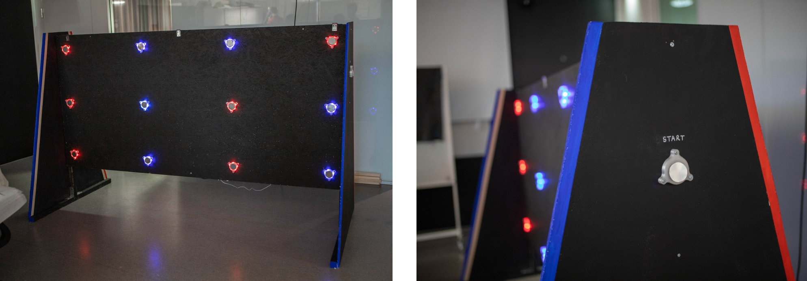

Overview
The Bright Side is a two-player game where the opponents stand on either side of the wall. Under time pressure, the players try to claim as many buttons as they can by tapping them. Whoever has the most buttons claimed in the end, wins! This was a project done in an interaction design course in collaboration with Generation Pep. They are a non-profit organization with a vision that each child and teenanger should have the ability to live an active and healthy life.
Through an iterative design process, The Bright Side was born. The project started off with brainstorming and a benchmark to see what was already available. We quickly decided on making a game and found inspiration in a one-player wall with buttons that could be found at Universeum. To make it more fun, we wanted to develop a multiplayer game as the competitive aspect will create more body movement. Since we were working together with Generation Pep, our target group became kids and young adults. We made lo-fi prototypes where we tested the sizing of the wall and the number and placement of the buttons. A 1:10 sketch model was made for construction purposes and sizing.
When a basic layout and idea of the game mechanics were done, we performed user tests with 4 participants. We used different colored sticky notes to represent the buttons and wizard of oz to mimic the players claiming the buttons. Things we evaluated were the duration of gameplay, the layout and if the game was fun and got the heart beat up. The participants in the study appreciated the game and said that it was fun even though some of them uttered that it might be hard to estimate the experience of the final product due to wizard of oz being used instead of working buttons.
After the user test, it was time to assemble the wall. We 3D printed buttons, soldered a lot of wires and LED strips, programmed the arduino and spent time in the wood workshop.
The Bright Side has 12 buttons on either side to promote movement in a hectic game. The buttons light up in red or blue, which is a color combo that is common in other games and works well for red-green color blind people. To initiate the game, a separate start button on the side is pressed which will start a counter for the game. Whoever has the most claimed buttons after 50 seconds wins. The supports have different colors on the sides, to indicate what team you are playing for.
I am very happy with the end result, it was a fun, but time-consuming project. My group had really high ambitions from the start and we imagined a game with 32 buttons. We were a bit naive since no group member had that much experience working with an arduiono which was used to control the buttons. In the end, we only included 24 buttons due to power supply issues, but it worked out great anyways. Apart from reducing the number of buttons we also had to adjust dim the light in each button to save even more power.
Since our target group were children it would have been best to perform user tests on them. We decided to make a convenience selection due to the limited time to find candidates. It is especially hard to find and perform user tests on minors.